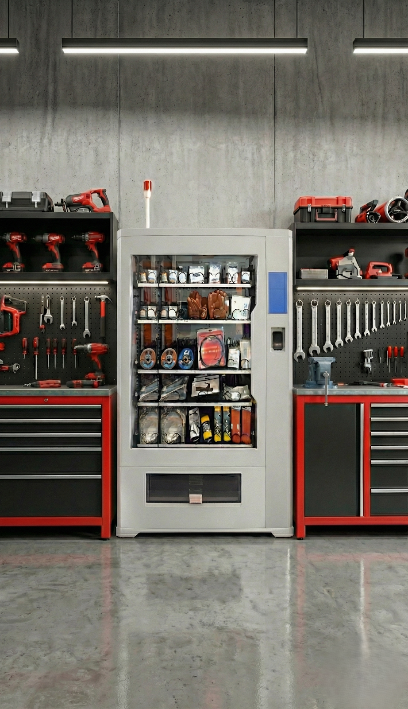

Der Gefahrschtoffschrank
Der Gefahrstoffschrank bietet maximale Sicherheit bei der Lagerung und Abgabe von Spraydosen mit brennbaren oder explosiven Treibgasen. Er erfüllt höchste Explosionsschutzanforderungen, überwacht die Innenraumluft automatisch und reagiert zuverlässig auf kritische Gaswerte. Mit visuellen und akustischen Warnsignalen, automatischer Abschaltung und sicherem Zugang gewährleistet der Schrank einen jederzeit kontrollierten und gesetzeskonformen Umgang mit Gefahrstoffen – für maximale Betriebssicherheit bei minimalem Aufwand.
- Vielseitigkeit & Bauweise:
Maximale Flexibilität dank Spiral-, Segment- und Schubladenmodulen - Effiziente Verwaltung:
Effiziente Materialverwaltung für Kleinteile, Werkzeuge & Fliesen - Verfügbarkeit & Sicherheit:
24/7 verfügbar & ausfallsicher durch integrierte USV - Transparenz & Analyse:
Volle Transparenz durch Nutzungs- und Abnutzungsstatistiken. - Zugriffskontrolle:
Kontrollierter Zugriff via Karten- oder Barcode-ID - Benutzerfreundlichkeit:
Einfache Bedienung über Touchscreen & mehrsprachige Oberfläche - Systemintegration:
Nahtlose Integration durch Datenexport & erweitertes Berichtssystem

